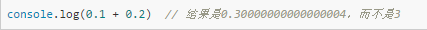
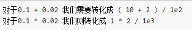

1. 第1节：JavaScript面试题目
1.1. JavaScript中如何检测一个变量是一个String类型？
typeof(obj) === "string"
typeof obj === "string"
obj.constructor === String
1.2. js去除字符串空格？
1.2.1. 方法一: 使用replace正则匹配的方法
去除所有空格:
str = str.replace(/\s*/g,"");
去除两头空格:
str = str.replace(/^\s*|\s*$/g,"");
去除左空格：
str = str.replace( /^\s*/, “”);
去除右空格：
str = str.replace(/(\s*$)/g, "");
str为要去除空格的字符串，实例如下：
var str = " 1 2 3 ";
var str2 = str.replace(/\s*/g,"");
console.log( str2 ) // 123
1.2.2. 方法二: 使用str.trim()方法
str.trim()局限性：无法去除中间的空格，实例如下：
var str = " xiao ming ";
var str2 = str.trim();
console.log(str2); //xiao ming
同理，str.trimLeft()，str.trimRight()分别用于去除字符串左右空格。
1.2.3. 方法三: 使用jquery,$.trim(str)方法
$.trim(str)局限性：无法去除中间的空格，实例如下：
var str = " xiao ming ";
var str2 = $.trim(str)
console.log(str2); // xiao ming
1.3. 如何获取浏览器URL中查询字符串中的参数？
测试地址为：obj = http://www.runoob.com/jquery/misc-trim.html?channelid=12333&name=xiaoming&age=23
function showWindowHref(){
var sHref = window.location.href;
var args = sHref.split('?');
if(args[0] == sHref){
return "";
}
var arr = args[1].split("&"); //["channelid=12333", "name=xiaoming", "age=23"]
var obj = {};
for (var i=0; i<arr.length; i++){
var arg = arr[i].split("="); //["channelid", "12333"] ["name", "xiaoming"] ["age", "23"]
obj[arg[0]] = arg[1]; // obj = {channelid: "12333", name: "xiaoming", age: "23"}
}
}
var href = showWindowHref(); // obj
console.log(href['name']); // xiaoming
1.4. js 字符串操作函数
我这里只是列举了常用的字符串函数，具体使用方法，请参考网址。
concat()– 将两个或多个字符的文本组合起来，返回一个新的字符串。示例：
var a = "wang"; var b = "yong"; var c = "jie"; console.log(a.concat(b,c)) // wangyongjieindexOf()– 返回字符串中一个子串第一处出现的索引。如果没有匹配项，返回 -1 。与lastIndexOf区别示例：
var a = "wangyongjie"; console.log(a.indexOf("y")) // 4 console.log(a.indexOf("z")) // -1charAt()– 返回指定位置的字符。示例：
var a = "wangyongjie"; console.log(a.charAt(3)) // glastIndexOf()– 返回字符串中一个子串最后一处出现的索引，如果没有匹配项，返回 -1 。 与indexOf区别示例：
var a = "wangyongjie"; console.log(a.lastIndexOf("n")) // 6match()– 检查一个字符串是否匹配一个正则表达式。示例：
var a = "wangyongjie";substr()函数 -- 返回从string的startPos位置，长度为length的字符串示例：
var a = "wangyongjie";substring()– 返回字符串的一个子串。传入参数是起始位置和结束位置。示例：
var a = "wangyongjie";slice()– 提取字符串的一部分，并返回一个新字符串。示例：
var a = "wangyongjie"; console.log(a.slice(3,9)) //gyongj 包含开始不包含结尾 console.log(a.slice(-3,9)) // j -1 指最后一个元素，-2 指倒数第二个元素，以此类推。 console.log(a.slice(-9,-3)) //ngyong 如果第二个参数是负数，那么它规定的是从数组尾部开始算起的元素。replace()– 用来查找匹配一个正则表达式的字符串，然后使用新字符串代替匹配的字符串。示例：
var a = "wangyongjie";search()– 执行一个正则表达式匹配查找。如果查找成功，返回字符串中匹配的索引值。否则返回 -1 。示例：
var a = "wangyongjie";split()– 通过将字符串划分成子串，将一个字符串做成一个字符串数组。示例：
var a = "wangyongjie"; console.log(a.split()) //["wangyongjie"]length– 返回字符串的长度，所谓字符串的长度是指其包含的字符的个数。示例：
var a = "wangyongjie"; console.log(a.length) // 11toLowerCase()– 将整个字符串转成小写字母。示例：
var a = "WANGYONGJIE"; console.log(a.toLowerCase()) // wangyongjietoUpperCase()– 将整个字符串转成大写字母。示例：
var a = "wangyongjie"; console.log(a.toUpperCase()) //WANGYONGJIE
1.5. 怎样添加、移除、移动、复制、创建和查找节点？
1.5.1. 创建新节点
createDocumentFragment() //创建一个DOM片段
createElement() //创建一个具体的元素
createTextNode() //创建一个文本节点
1.5.2. 添加、移除、替换、插入
appendChild() //添加
removeChild() //移除
replaceChild() //替换
insertBefore() //插入
1.5.3. 查找
getElementsByTagName() //通过标签名称
getElementsByName() //通过元素的Name属性的值
getElementById() //通过元素Id，唯一性
1.6. 写出三个使用 this 的典型应用
在html元素事件属性中使用
示例：
<input type=”button” onclick=”showInfo(this);” value=”点击一下”/>构造函数
示例：
function Animal(name, color) { this.name = name; this.color = color; }input点击，获取值
示例：
<input type="button" id="text" value="点击一下" /> <script type="text/javascript"> var btn = document.getElementById("text"); btn.onclick = function() { alert(this.value); //此处的this是按钮元素 } </script>apply()/call()求数组最值
示例：
var numbers = [5, 458 , 120 , -215 ]; var maxInNumbers = Math.max.apply(this, numbers); console.log(maxInNumbers); // 458 var maxInNumbers = Math.max.call(this,5, 458 , 120 , -215); console.log(maxInNumbers); // 458
1.7. 为什么JS中0.1+0.2 != 0.3？ 参考
JS中数字运算时，有一个叫做 数字运算中的精度缺失的问题

那么最常用的方法就是将浮点数转化成整数计算。因为整数都是可以精确表示的。

1.8. 基本数据类型？引用数据类型？
1.9. 如何消除一个数组里面重复的元素？
1.9.1. 方法一：
思路:
创建一个新的空数组,用来存放去重后的新数组.
利用for循环循环遍历需要去重的数组.
利用indexOf()方法查询遍历出的数组在新数组中是否出现,如果出现:则继续遍历数组,如未出现:则利用push方法添加到新数组中.
原数组循环遍历完成后,组建一个已经去除重复的新数组.
var arr = [1,3,4,5,6,7,4,3,2,4,5,6,7,3,2];
function find(){
var newArr = [];
for (var i = 0; i < arr.length; i++) {
if (newArr.indexOf(arr[i]) == -1 ) {
newArr.push(arr[i]);
}
}
document.write(newArr);
}
find(arr);
返回值:
- 如果检索的结果没有匹配值,则返回 -1.
- 如果检索的结果匹配到,则返回 1.
- 返回值为负值 正值 0,这里不再详解,另开一篇详解.
1.9.2. 方法二：
let arr = [1, 2, 2, 3];
let set = new Set(arr);
let newArr = Array.from(set); // Array.from方法可以将 Set 结构转为数组。
console.log(newArr); // [1, 2, 3]
1.10. 在Javascript中什么是伪数组？如何将伪数组转化为标准数组？
1.11. 简述同步和异步的区别？
同步是阻塞模式，异步是非阻塞模式。
同步就是指一个进程在执行某个请求的时候，若该请求需要一段时间才能返回信息，那么这个进程将会一直等待下去，直到收到返回信息才继续执行下去；
异步是指进程不需要一直等下去，而是继续执行下面的操作，不管其他进程的状态。当有消息返回时系统会通知进程进行处理，这样可以提高执行的效率。
1.12. 关于跨域的描述
只要 协议 、 域名 、 端口 有任何一个 不同, 都被当作是 不同 的域。
域名要相同（www.example.com和example.com不同），协议要相同（http和https不同），端口号要相同（默认是:80端口，它和:8080就不同）。
1.13. 解决跨域
CORS CORS（Corss-Origin Resource Sharing,跨资源共享），基本思想是使用自定义的HTTP头部让浏览器与服务器进行沟通，从而决定请求或响应的成功或失败。即给请求附加一个额外的Origin头部，其中包含请求页面的源信息（协议、域名和端口），以便服务器根据这个头部决定是否给予响应。
document.domain 将页面的document.domain设置为相同的值，页面间可以互相访问对方的JavaScript对象。
注意：
不能将值设置为URL中不包含的域；
松散的域名不能再设置为紧绷的域名。
图像Ping
var img=new Image(); img.onload=img.onerror=function(){ ... ... } img.src="url?name=value";请求数据通过查询字符串的形式发送，响应可以是任意内容，通常是像素图或204响应。
图像Ping最常用于跟踪用户点击页面或动态广告曝光次数。
缺点：
只能发送GET请求；
无法访问服务器的响应文本，只能用于浏览器与服务器间的单向通信。
Jsonp
var script=document.createElement("script"); script.src="url?callback=handleResponse"; document.body.insertBefore(script,document.body.firstChild);JSONP由两部分组成：回调函数和数据
回调函数是接收到响应时应该在页面中调用的函数，其名字一般在请求中指定。
数据是传入回调函数中的JSON数据。
优点：
能够直接访问响应文本，可用于浏览器与服务器间的双向通信。
缺点：
JSONP从其他域中加载代码执行，其他域可能不安全；
难以确定JSONP请求是否失败。
Comet
Comet可实现服务器向浏览器推送数据。
Comet是实现方式：长轮询和流
短轮询即浏览器定时向服务器发送请求，看有没有数据更新。
长轮询即浏览器向服务器发送一个请求，然后服务器一直保持连接打开，直到有数据可发送。发送完数据后，浏览器关闭连接，随即又向服务器发起一个新请求。其优点是所有浏览器都支持，使用XHR对象和setTimeout()即可实现。
流即浏览器向服务器发送一个请求，而服务器保持连接打开，然后周期性地向浏览器发送数据，页面的整个生命周期内只使用一个HTTP连接。
WebSocket
WebSocket可在一个单独的持久连接上提供全双工、双向通信。
WebSocket使用自定义协议，未加密的连接时ws://；加密的链接是wss://。
var webSocket=new WebSocket("ws://"); webSocket.send(message); webSocket.onmessage=function(event){ var data=event.data; ... .... }注意：
必须给WebSocket构造函数传入绝对URL；
WebSocket可以打开任何站点的连接，是否会与某个域中的页面通信，完全取决于服务器；
WebSocket只能发送纯文本数据，对于复杂的数据结构，在发送之前必须进行序列化JSON.stringify(message))。
优点：
在客户端和服务器之间发送非常少的数据，减少字节开销。
1.14. 有关js事件的响应
onclick 鼠标点击某个对象
onfocus 获得焦点
onblur 失去焦点
onload 是某个页面的css js html 文档结构和图像被完全加载
onmousedown 某个鼠标按键被按下
onchange:当文字值改变时，产生该事件
onselect:当文字加亮后，产生该事件